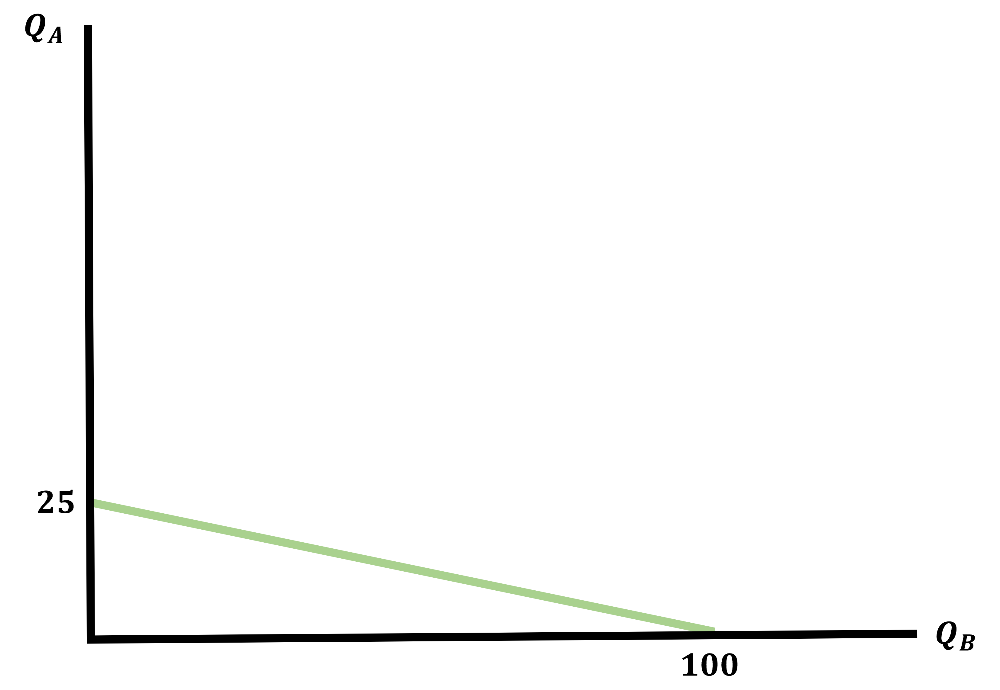
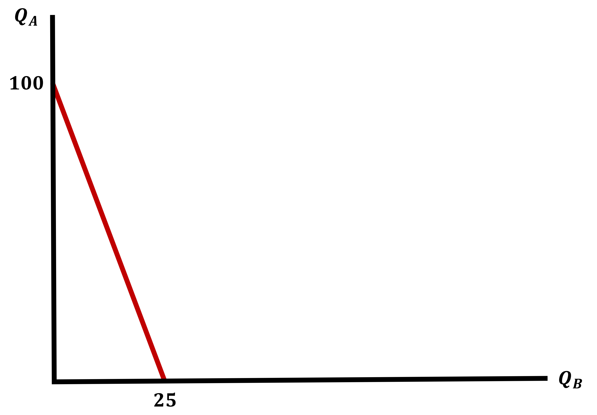
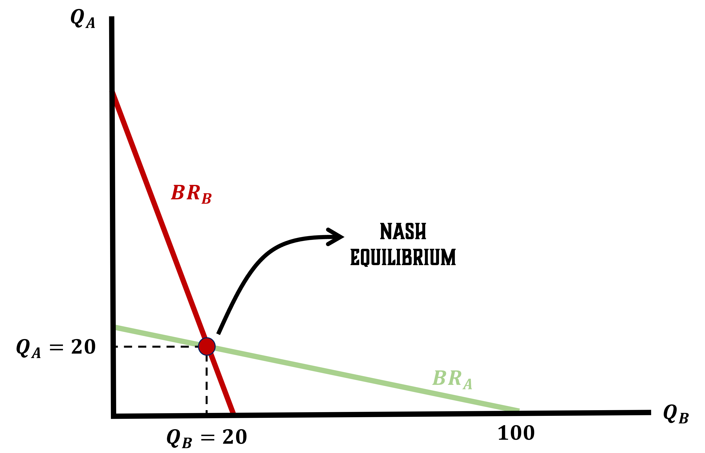

Cournot Competition = Simultaneous Decisions
This model consists of two firms competing by Best Responding to one-another’s quantity choices
We call this a Cournout Competition or Cornout Equilibrium
- Mathematically, this will look like a modified Monopoly with two firms
\[\begin{align*} \pi_{A} &= P \cdot Q_{A} - C(Q_{A}) \\ \pi_{B} &= P \cdot Q_{B} - C(Q_{B}) \\ \end{align*}\]
Price is a function of Market Quantity which is the sum of both firms quantity
\[\begin{align*} P &= f(Q_{S}) = f(Q_{A} + Q_{B}) \end{align*}\]
Which is the Market Demand Curve
Cournot Equilibrium - Example
Let both firms have the following Cost Functions and Demand Curve
\[ C(Q) = Q^{2} \;\;\;\;\; ; \;\;\;\;\; P = 100 - Q_{D} \]
Demand is the sum of both firms produced quantities
\[\begin{align*} Q_{D} &= Q_{A} + Q_{B} \\ \end{align*}\]
Find the Demand Curve
\[\begin{align*} P &= 100 - \color{red}{Q_{D}} \\ P &= 100 - \color{red}{(Q_{A} + Q_{B})} \\ P &= 100 - Q_{A} - Q_{B} \end{align*}\]
Cournot Equilibrium - Profits
We can then write these firms profits using our updated Demand Curve
\[ (P = 100 - Q_{A} - Q_{B}) \]
Remember profits are written as
\[ \pi = P \cdot Q - C(Q) \]
Write both Firm A and Firm B’s Profit Functions
\[\begin{align*} \pi_{A} &= (100 - Q_{A} - Q_{B}) \cdot Q_{A} - Q_{A}^{2} \\ \\ \pi_{B} &= (100 - Q_{A} - Q_{B}) \cdot Q_{B} - Q_{B}^{2} \end{align*}\]
Cournot Equilibrium - Best Response Functions
We find Best Response Functions because we want to model it in such a way that we can observe responses to any possible quantity levels
We can find these by finding the profit maximizing quantity of each profit function
\[ \frac{\partial \pi_{i}}{\partial Q_{i}} = 0 \]
Cournot Equilibrium - Example Best Response Functions
\[\begin{align*} \pi_{A} &= (100 - Q_{A} - Q_{B}) \cdot Q_{A} - Q_{A}^{2} \\ \\ \pi_{B} &= (100 - Q_{A} - Q_{B}) \cdot Q_{B} - Q_{B}^{2} \end{align*}\]
Find the Best Response Functions for both firms
Hint: You only need to do the work for one, the other is symmetric
Find \(\; \frac{\partial \pi_{A}}{\partial Q_{A}} = 0\)
\[\begin{align*} 100 - 2Q_{A} - Q_{B} - 2Q_{A} &= 0 \\ 4Q_{A} &= 100 - Q_{B} \\ Q^{*}_{A} &= \frac{100 - Q_{B}}{4} \end{align*}\]
By Symmetry, we know Firm B’s Best Response
\[\begin{align*} Q^{*}_{B} &= \frac{100 - Q_{A}}{4} \end{align*}\]
Cournot Equilibrium - Optimal Quantity
Would you believe me if I told you we can get a number for \(Q_{A}^{*}\) from this?
We have \(\; Q^{*}_{A} = \frac{100 - Q_{B}}{4} \;\; \& \;\; Q^{*}_{B} = \frac{100 - Q_{A}}{4}\)
Find \(\; Q^{*}_{A} \;\) by plugging in our \(\; Q^{*}_{B} \;\) function
We solve this by putting one Best Response into the other
\[\begin{align*} Q^{*}_{A} = \frac{100 - \color{red}{Q_{B}}}{4} \\ \\ Q^{*}_{A} = \frac{100 - \color{red}{\frac{100 - Q_{A}}{4}}}{4} \end{align*}\]
Cournot Equilibrium - Optimal Quantity & Price
\[ Q^{*}_{A} = \frac{100 - \frac{100 - Q_{A}}{4}}{4} \]
Find Optimal Quantity
\[\begin{align*} 4Q^{*}_{A} &= 100 - \frac{100 - Q_{A}^{*}}{4} \\ 16Q^{*}_{A} &= 400 - (100 - Q_{A}^{*}) \\ 15Q^{*}_{A} &= 300 \\ Q^{*}_{A} &= 20 = Q^{*}_{B} \end{align*}\]
Find Market Supply
\[\begin{align*} Q_{S} &= Q_{A}^{*} + Q_{B}^{*} \\ Q_{S} &= 20 + 20 \\ Q_{S} &= 40 \end{align*}\]
Find Market Price
\[\begin{align*} P &= 100 - Q_{D} \\ P &= 100 - 40 \\ P^{*} &= 60 \end{align*}\]
Cournot Equilibrium
We just saw that each firm is best responding to the other’s decisions
The equilibrium we found is the point where
Both firms are best responding to each other at the same time
Let’s look at a graph of the previous example
Graphing Best Response Functions - Firm A
Firm A’s Best Response Function
\[\begin{align*} Q^{*}_{A} &= \frac{100 - Q^{*}_{B}}{4} \\ \\ Q^{*}_{A} &= 25 - \frac{Q^{*}_{B}}{4} \end{align*}\]

Graphing Best Response Functions - Firm B
Firm B’s Best Response Function
\[\begin{align*} Q^{*}_{B} &= \frac{100 - Q^{*}_{A}}{4} \\ \\ Q^{*}_{B} &= 25 - \frac{Q^{*}_{A}}{4} \end{align*}\]

Cournot Equilibrium - Graph
The Cournot Equilibrium Quantities are where the Best Response Functions intersect

Where Does Cournot Place Relative to Other Market Types?
We know how to find Monopolist Equilibriums and Perfectly Competitive Equilibriums from just the Cost Functions
We can rank outcomes intuitively using what we know about each one:
Relative to a Monopoly
- Quantity should be higher and price lower because there is more competition in a Cournot Duopoly
Relative to Perfect Competition
- Quantity should be lower and price higher because there is relatively less competition in a Cournot Duopoly
Practice Makes Perfect
Let’s find Perfect Competition Equilibrium and compare our results
\[ \text{Profits: } \pi_{A} = P \cdot Q_{A} - Q_{A}^{2} \;\;\;\; \text{and} \;\;\;\; \pi_{B} = P \cdot Q_{B} - Q_{B}^{2} \]
\[ \text{Demand: } P = 100 - Q_{D} \]
Find the Perfectly Competitive Equilibrium Quantity and Price Maximize both profits, find optimal quantities, set supply = demand, and find numbers for Quantity and Price
\[\begin{align*} \frac{\partial \pi_{A}}{\partial Q_{A}} &= 0 \\ P - 2Q_{A} &= 0 \\ Q_{A}^{*} &= \frac{P}{2} \\ Q_{B}^{*} &= \frac{P}{2} \end{align*}\]
\[\begin{align*} Q_{S} &= Q_{A}^{*} + Q_{B}^{*} \\ Q_{S} &= \frac{P}{2} + \frac{P}{2} = P \end{align*}\]
\[\begin{align*} \text{Supply} &= \text{Demand} \\ Q_{S} &= 100 - Q_{D} \\ 2Q &= 100 \\ Q^{*} &= 50 \end{align*}\]
\[\begin{align*} P^{*} &= 100 - Q^{*} \\ P^{*} &= 100 - 50 \\ P^{*} &= 50 \end{align*}\]
Cournot Equilibrium vs Monopoly
How does Cournot Competition compare to Monopoly?
There are now two firms so it is not a Monopoly by definition
But we can do some work to make it one
Imagine that both firms collude. In other words, they cooperatively agree on how much to produce
We call this a Cartel
We can find how much they produce by “combining” the firms and maximizing profit